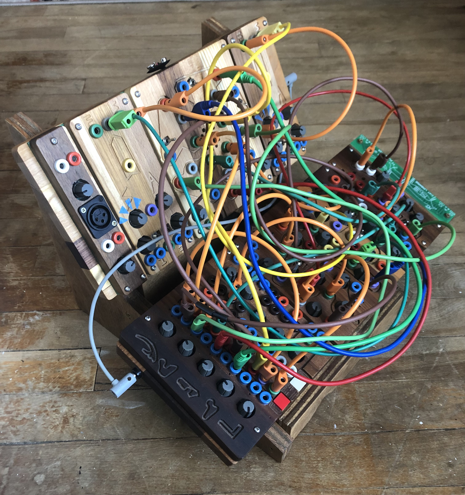

About Me
Now that we have been properly introduced, here's a little more on my hobbies!
Visual Art
 A recent untitled collage
A recent untitled collage
From a young age, I have been fascinated with drawing and collage. As a kid I used to make comics and
practice figurative drawing. I now tend to gravitate towards abstract work. I find both drawing and
collaging to be extremely meditative. At times the work can be meticulous and require alot of concentration,
but at other times it can involve a lot of repetiton. Working with visual art switches between soothing and
challenging. Even if I don't like what I end up with, I always appreciate the process.
Travel
the Badlands, North Dakota
Most of our our lives are spent either producing or consuming. Tine out in nature is a chance to be quiet and
listen to one's surroundings. For me, walking around outside feels like a reset button. It puts things in
perspective- literally and figuratively. Not only do my problems feel diminished by the vastness of the
outdoors, but something indescribable happens when I am able to see for miles into the distance
Synthesizers

Modular synthesis is an extremely interesting topic. To understand synthesis, you must first gain a strong understanding of the physics of sound. The synthesist's motto is "Everything is a wave". I don't know much about physics in general, but as far as I understand, this might be true for all matter! Modular synths offer a very different style of playing music. You enter into a kind of dialogue with your instrument; you set the initial conditions, and then sit back to listen to the results. From there, you can make adjustments to taste. It's a back and forth that can invite a kind of "deep listening" that I'm often incapable of when playing something like a guitar: I'm too busy making sure I'm playing the right chords! Pictured here are two Ciat Lonabrde synthesizers sitting in a home-made wooden case.